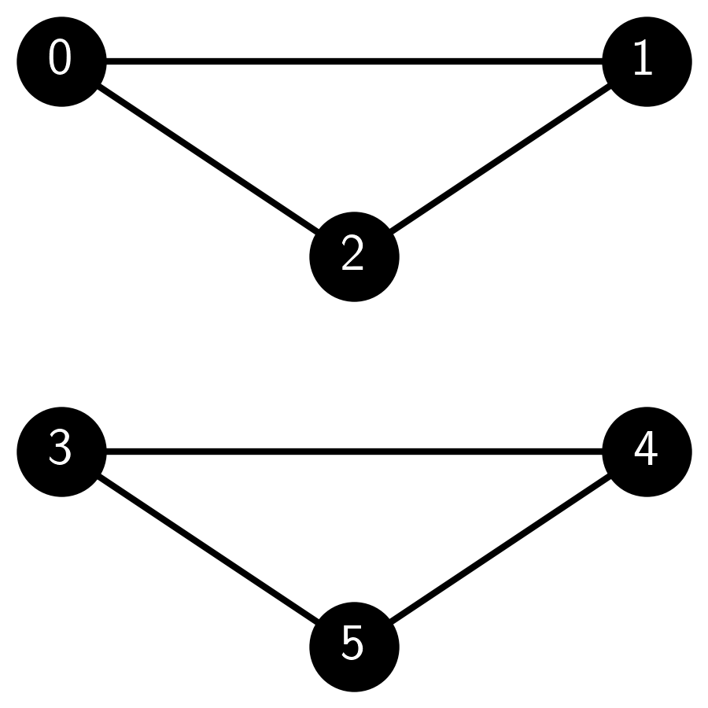

\(\newcommand{\bmu}{\boldsymbol{\mu}}\) \(\newcommand{\bSigma}{\boldsymbol{\Sigma}}\) \(\newcommand{\bfbeta}{\boldsymbol{\beta}}\) \(\newcommand{\bflambda}{\boldsymbol{\lambda}}\) \(\newcommand{\bgamma}{\boldsymbol{\gamma}}\) \(\newcommand{\bsigma}{{\boldsymbol{\sigma}}}\) \(\newcommand{\bpi}{\boldsymbol{\pi}}\) \(\newcommand{\btheta}{{\boldsymbol{\theta}}}\) \(\newcommand{\bphi}{\boldsymbol{\phi}}\) \(\newcommand{\balpha}{\boldsymbol{\alpha}}\) \(\newcommand{\blambda}{\boldsymbol{\lambda}}\) \(\renewcommand{\P}{\mathbb{P}}\) \(\newcommand{\E}{\mathbb{E}}\) \(\newcommand{\indep}{\perp\!\!\!\perp} \newcommand{\bx}{\mathbf{x}}\) \(\newcommand{\bp}{\mathbf{p}}\) \(\renewcommand{\bx}{\mathbf{x}}\) \(\newcommand{\bX}{\mathbf{X}}\) \(\newcommand{\by}{\mathbf{y}}\) \(\newcommand{\bY}{\mathbf{Y}}\) \(\newcommand{\bz}{\mathbf{z}}\) \(\newcommand{\bZ}{\mathbf{Z}}\) \(\newcommand{\bw}{\mathbf{w}}\) \(\newcommand{\bW}{\mathbf{W}}\) \(\newcommand{\bv}{\mathbf{v}}\) \(\newcommand{\bV}{\mathbf{V}}\) \(\newcommand{\bfg}{\mathbf{g}}\) \(\newcommand{\bfh}{\mathbf{h}}\) \(\newcommand{\horz}{\rule[.5ex]{2.5ex}{0.5pt}}\) \(\renewcommand{\S}{\mathcal{S}}\) \(\newcommand{\X}{\mathcal{X}}\) \(\newcommand{\var}{\mathrm{Var}}\) \(\newcommand{\pa}{\mathrm{pa}}\) \(\newcommand{\Z}{\mathcal{Z}}\) \(\newcommand{\bh}{\mathbf{h}}\) \(\newcommand{\bb}{\mathbf{b}}\) \(\newcommand{\bc}{\mathbf{c}}\) \(\newcommand{\cE}{\mathcal{E}}\) \(\newcommand{\cP}{\mathcal{P}}\) \(\newcommand{\bbeta}{\boldsymbol{\beta}}\) \(\newcommand{\bLambda}{\boldsymbol{\Lambda}}\) \(\newcommand{\cov}{\mathrm{Cov}}\) \(\newcommand{\bfk}{\mathbf{k}}\) \(\newcommand{\idx}[1]{}\) \(\newcommand{\xdi}{}\)
5.6. Erdős-Rényi random graph and stochastic blockmodel#
A natural way to test an algorithm is by running it on a simulated dataset whose “ground truth” is known. We encountered this idea for instance in clustering, where we used a mixture of Gaussians; there, the ground truth was the mixture component from which a data point was generated. What is an appropriate stochastic model in the context of network analysis?
In fact there are many models of random graphs, i.e., graphs whose edges are picked at random. Which one to use depends on the task at hand. For graph partitioning, one requires a graph with a “planted partition”. The stochastic blockmodel is a canonical example of such a model. We begin with a more general setting.
5.6.1. Inhomogeneous Erdős-Rényi random graph#
A simple approach to generating a random graph is to include each edge independently. More precisely, let \(V = [n]\) be a set of \(n\) vertices. Consider a symmetric matrix \(M = (m_{i,j}) \in [0,1]^{n \times n}\) with arbitrary entries in \([0,1]\). The entry \(m_{i,j} = m_{j,i}\) is the probability that edge \(\{i,j\}\) is present (i.e., that \(\{i,j\} \in E\)), independently of all other edges. The outcome is a random graph \(G = (V, E)\) with random adjacency matrix \(A = (A_{i,j}) \in \{0,1\}^{n \times n}\). This model is known as an inhomogeneous Erdős-Rényi (ER) random graph\(\idx{inhomogeneous Erdős-Rényi random graph}\xdi\).
Observe that
Indeed each entry \(A_{i,j}\) is a Bernoulli random variable with success probability \(m_{i,j}\). In other words, in matrix form, we have
that is, \(M\) is the expected adjacency matrix. Note in particular that \(M\) is deterministic while \(A\) is random (which is why we use lowercase entries for \(M\) but uppercase entries for \(A\)).
An important special case is obtained when \(m_{i,j} = m_{j,i} = p \in (0,1)\) for all \(i \neq j\) and \(m_{k,k} = 0\) for all \(k\). That is, each possible edge between two distinct vertices is present with the same probability \(p\). This model is known simply as an Erdős-Rényi (ER) random graph\(\idx{Erdős-Rényi random graph}\xdi\). Put differently,
where \(J \in \mathbb{R}^{n \times n}\) is the all-one matrix. In this calculation, we subtract the identity matrix to account for the fact that the diagonal is \(0\).
The properties of this model are very well-studied. We give a couple of examples next.
EXAMPLE: Let \(G = (V, E)\) be an ER graph with \(n\) vertices. The parameter \(p\) can be interpreted as an edge density. Indeed, let’s compute the expected number of edges \(G\). By summing over all pairs and using linearity of expectation, we have
Or, put differently, we have shown that the expected edge density \(\E\left[|E|/\binom{n}{2}\right]\) is \(p\).
A similar calculation gives the expected number of triangles. Denote by \(T_3\) the number of triangles in \(G\), that is, the number of triples \(i, j , k\) of distinct vertices such that \(\{i,j\}, \{j,k\}, \{i,k\} \in E\) (i.e., all edges between them are present). Then
We used the independence of the edges on the third line. Or, put differently, we have shown that the expected triangle density \(\E\left[|T_3|/\binom{n}{3}\right]\) is \(p^3\). \(\lhd\)
We implement the generation of an inhomogeneous ER graph using NetworkX. We first initialize a pseudorandom number generator rng. To determine whether an edge is present between i and j, we generate a uniform random variable rng.random() (see numpy.random.Generator.random) and add the edge with G.add_edge(i, j) if the random variable is < M[i, j] – an event which indeed occurs with the desired probability (check it!).
def inhomogeneous_er_random_graph(rng, n, M):
G = nx.Graph()
G.add_nodes_from(range(n))
for i in range(n):
for j in range(i + 1, n):
if rng.random() < M[i, j]:
G.add_edge(i, j)
return G
NUMERICAL CORNER: Here is an example usage. We generate probabilities \(m_{i,j}\) uniformly at random between \(0\) and \(1\).
seed = 535
rng = np.random.default_rng(seed)
n = 20
M = rng.random([n, n])
M = (M + M.T) / 2 # ensures symmetry of M (why?)
G = inhomogeneous_er_random_graph(rng, n, M)
We draw the resulting graph.
nx.draw_networkx(G, node_color='black', font_color='white')
plt.axis('off')
plt.show()
\(\unlhd\)
The following subroutine generates an ER graph.
def er_random_graph(rng, n, p):
M = p * (np.ones((n, n)) - np.eye(n))
return inhomogeneous_er_random_graph(rng, n, M)
To confirm our previous calculations, below is the implementation of a routine to estimate the edge density for an ER graph with a fixed parameter \(p\). Recall that the edge density is defined as the number of edges present divided by the number of possible edges (i.e., the number of pairs of distinct vertices). The routine takes advantage of the Law of Large Numbers by generating a large number of sample graphs, computing their edge density, and then taking the mean.
def estimate_edge_density(rng, n, p, num_samples=100):
total_edges = 0
total_possible_edges = n * (n - 1) / 2
for _ in range(num_samples):
G = er_random_graph(rng, n, p)
total_edges += G.number_of_edges()
average_edges = total_edges / num_samples
edge_density = average_edges / total_possible_edges
return edge_density
NUMERICAL CORNER: On a small example, we indeed get that the edge density is roughly \(p\).
n = 10
p = 0.3
num_samples = 1000
estimated_density = estimate_edge_density(rng, n, p, num_samples)
print(f"Estimated edge density for an ER graph with n={n} and p={p}: {estimated_density}")
Estimated edge density for an ER graph with n=10 and p=0.3: 0.3004888888888889
TRY IT! Modify the code above to estimate the density of triangles. (Open In Colab) \(\ddagger\)
\(\unlhd\)
When \(n\), the number of vertices, is large, random graphs tend to exhibit large-scale emergent behavior. One classical example involves the probability of being connected in an ER graph. To illustrate, below is code to estimate that probability over a range of edge densities \(p\) (with help from Claude and ChatGPT).
def estimate_connected_probability(rng, n, p, num_samples=100):
connected_count = 0
for _ in range(num_samples):
G = er_random_graph(rng, n, p)
if nx.is_connected(G):
connected_count += 1
connected_probability = connected_count / num_samples
return connected_probability
def plot_connected_probability(rng, n, p_values, num_samples=100):
probabilities = []
for p in p_values:
prob = estimate_connected_probability(rng, n, p, num_samples)
probabilities.append(prob)
plt.figure(figsize=(6, 4))
plt.plot(p_values, probabilities, marker='o', color='black')
plt.xlabel('$p$'), plt.ylabel('Estimated probability of being connected')
plt.show()
NUMERICAL CORNER: We run the code for n equal to 100. What do you observe?
n = 100
p_values = np.linspace(0, 0.1, 50)
num_samples = 250
plot_connected_probability(rng, n, p_values, num_samples)
The probability of being connected starts out at \(0\) when \(p\) is small, which is not surprising since it implies that the graph has a relatively small number of edges. But then that probability increases – rapidly – to \(1\) as \(p\) crosses a threshold. This is referred to as the phase transition of the ER graph.
It can be shown rigorously that the transition occurs at roughly \(p = \log n/n\). That is:
np.log(n)/n
0.04605170185988092
which is consistent with the plot.
TRY IT! Taking a larger n would produce a sharper transition. Try it for yourself. Also try drawing one random sample for increasing values of \(p\) around the threshold. What do you observe? (Open In Colab) \(\ddagger\)
TRY IT! Many other properties exhibit such sharp threshold behavior. Modify the code to to estimate the probability that a clique of size 4 exists in the graph. (Open In Colab) \(\ddagger\)
\(\unlhd\)
5.6.2. Stochastic blockmodel#
We return to our original motivation. How can we create a random graph with a planted partition? The stochastic blockmodel (SBM) is such a model. Here we imagine that \([n]\) is partioned into two disjoint sets \(C_1\) and \(C_2\), referred to as blocks. We set \(z(i) = j\) if vertex \(i\) is in block \(C_j\). We also encode the block assignment with a matrix \(Z \in \{0,1\}^{n \times 2}\) where row \(i\) is \(\mathbf{e}_j^T\) if vertex \(i\) is assigned to block \(C_j\).
Let \(b_{i,j} \in [0,1]\) be the probability that a vertex in block \(C_i\) and a vertex in block \(C_j\) are connected by an edge, independently of all other edges. We enforce \(b_{1,2} = b_{2,1}\). We collect these probabilities in the following matrix
By our assumption, the matrix \(B\) is symmetric.
We typically take
that is, edges are more likely between vertices in the same block than between vertices in different blocks. That corresponds to the intuition that, in social networks or other types of networks, members of the same group (i.e., block) tend to interact more frequently with each other than with members of different groups. For instance, friends within the same social circle are more likely to be connected than with people outside their circle. That is related to the concept of homophily which describes the tendency of individuals to associate and bond with similar others.
This is a special case of the inhomogeneous ER graph model. What is the corresponding \(M\) matrix? Note that, for each pair of vertex \(1 \leq i < j \leq n\), edge \(\{i,j\}\) is present in \(E\) with probability
where recall that \(Z_{i,\cdot}\) is row \(i\) of matrix \(Z\).
In matrix form, this is saying that
So, given \(B\) and \(Z\), we can generate an SBM as a special case of an inhomogeneous ER graph.
We implement the SBM model. We use blocks numbered \(0\) and \(1\).
def sbm_random_graph(rng, n, block_assignments, B):
num_blocks = B.shape[0]
Z = np.zeros((n, num_blocks))
for i in range(n):
Z[i, block_assignments[i]] = 1
M = Z @ B @ Z.T
return inhomogeneous_er_random_graph(rng, n, M)
NUMERICAL CORNER: Here is an example usage. We first pick a block assignment at random. Specifically, blocks are assigned randomly with numpy.random.Generator.choice. It produces two blocks by assigning each vertex with equal probability to either block, independently of all other choices.
n = 50
block_assignments = rng.choice(2, n) # randomly assign vertices to two blocks
B = np.array([[0.8, 0.1], [0.1, 0.8]])
G = sbm_random_graph(rng, n, block_assignments, B)
We draw the graph with colored nodes based on block assignments. The “good” cut is clearly visible in this layout.
plt.figure(figsize=(6,6))
pos = nx.spring_layout(G)
nx.draw(G, pos, with_labels=True, node_color=block_assignments, cmap='rainbow',
node_size=200, font_size=10, font_color='white')
plt.show()

\(\unlhd\)
We introduce a subroutine which assigns blocks at random as follows. Let \(\beta_1, \beta_2 \in [0,1]\) with \(\beta_1 + \beta_2 = 1\) be the probability that a vertex belongs respectively to block \(1\) and \(2\). We collect these probabilities in the following vector
We pick block \(z(i) \in \{1,2\}\) for each vertex \(1 \leq i \leq n\) according to the distribution \(\bbeta\), independently of all other vertices \(\neq i\).
def generate_block_assignments(rng, n, beta):
return rng.choice(len(beta), size=n, p=beta)
NUMERICAL CORNER: Here is an example usage.
n = 50
beta = [0.33, 0.67]
B = np.array([[0.5, 0.03], [0.03, 0.4]])
block_assignments = generate_block_assignments(rng, n, beta)
G = sbm_random_graph(rng, n, block_assignments, B)
Observe that the blocks are more unbalanced this time.
plt.figure(figsize=(6,6))
pos = nx.spring_layout(G)
nx.draw(G, pos, with_labels=True, node_color=block_assignments, cmap=plt.cm.rainbow,
node_size=200, font_size=10, font_color='white')
plt.show()
To test our spectral partitioning algorithm, we run spectral_cut2, which indeed recovers the ground truth.
A = nx.adjacency_matrix(G).toarray()
s, sc = mmids.spectral_cut2(A)
plt.figure(figsize=(6,6))
mmids.viz_cut(G, s, pos, node_size=200, with_labels=True)
\(\unlhd\)
The following code computes the fraction of incorrectly assigned vertices. Note that it considers two assignments corresponding to swapping the labels 0 and 1 which cannot be inferred.
def calculate_incorrect_fraction(block_assignments, inferred_s, inferred_sc):
n = len(block_assignments)
inferred_assignments = np.zeros(n)
for i in inferred_s:
inferred_assignments[i] = 0
for i in inferred_sc:
inferred_assignments[i] = 1
incorrect_assignments_1 = np.sum(block_assignments != inferred_assignments)/n
incorrect_assignments_2 = np.sum(block_assignments == inferred_assignments)/n
return np.minimum(incorrect_assignments_1, incorrect_assignments_2)
NUMERICAL CORNER: We confirm on our previous example that the ground truth was perfectly recovered.
fraction_incorrect = calculate_incorrect_fraction(block_assignments, s, sc)
print(f"Fraction of incorrectly assigned vertices: {fraction_incorrect}")
Fraction of incorrectly assigned vertices: 0.0
One expects that the ground truth is harder to recover if the probability of an edge between blocks is close to that within blocks, which makes the community structure more murky. To test this hypothesis, we modify our previous example by significantly increasing the inter-block probability.
n = 100
beta = [0.55, 0.45]
B = np.array([[0.55, 0.25], [0.25, 0.45]])
block_assignments = generate_block_assignments(rng, n, beta)
G = sbm_random_graph(rng, n, block_assignments, B)
We run spectral_cut2. It recovers the ground truth only partially this time.
A = nx.adjacency_matrix(G).toarray()
s, sc = mmids.spectral_cut2(A)
fraction_incorrect = calculate_incorrect_fraction(block_assignments, s, sc)
print(f"Fraction of incorrectly assigned vertices: {fraction_incorrect}")
Fraction of incorrectly assigned vertices: 0.22
\(\unlhd\)
Self-assessment quiz (with help from Claude, Gemini, and ChatGPT)
1 In a stochastic blockmodel (SBM), what does \(b_{i,j}\) represent?
a) The probability that vertex \(i\) is assigned to block \(j\).
b) The probability that there is an edge between any two vertices.
c) The probability that there is an edge between a vertex in block \(C_i\) and a vertex in block \(C_j\).
d) The weight of the edge between vertex \(i\) and vertex \(j\).
2 Consider the following graph generated using NetworkX in Python:

Which of the following models could have produced this graph?
a) An Erdős-Rényi (ER) random graph.
b) A stochastic blockmodel (SBM) with two communities.
c) A symmetric stochastic blockmodel (SSBM) with two communities.
d) All of the above.
3 Consider an Erdős-Rényi (ER) random graph with \(n\) vertices and edge probability \(p\). The expected number of edges in the graph is:
a) \(n^2p\)
b) \(\binom{n}{2}p\)
c) \(np\)
d) \(n(n-1)p\)
4 Consider the following Python code snippet:
n, p = 5, 0.4
rng = np.random.default_rng(123)
G = nx.Graph()
G.add_nodes_from(range(n))
for i in range(n):
for j in range(i + 1, n):
if rng.random() < p:
G.add_edge(i, j)
Which of the following best describes the graph generated by this code?
a) An Erdős-Rényi (ER) random graph with \(n=5\) vertices and edge probability \(p=0.4\).
b) A stochastic blockmodel (SBM) with \(n=5\) vertices and intra-block probability \(p=0.4\).
c) A symmetric stochastic blockmodel (SSBM) with \(n=5\) vertices and inter-block probability \(p=0.4\).
d) An inhomogeneous Erdős-Rényi (ER) random graph with \(n=5\) vertices and edge probabilities given by a matrix \(M\).
5 In the stochastic blockmodel, what happens to the difficulty of recovering the community structure if the inter-block connection probability \(b_{1,2}\) is close to the intra-block connection probability \(b_{1,1}\)?
a) It becomes easier.
b) It remains unchanged.
c) It becomes harder.
d) None of the above.
Answer for 1: c. Justification: The text defines \(b_{i,j}\) as “the probability that a vertex in block \(C_i\) and a vertex in block \(C_j\) are connected by an edge.”
Answer for 2: d. Justification: The graph consists of two cliques (complete subgraphs) of size 3 each, one with vertices 0, 1, and 2 and another with vertices 3, 4, and 5. There are no edges between the two cliques. It has a positive probability of occurring under any ER, SBM, or SSBM random graph model where all edge probabilities are in \((0,1)\).
Answer for 3: b. Justification: The text states: “Let’s compute the expected number of edges \(G\). By summing over all pairs and using linearity of expectation, we have \(\mathbb{E}[|E|] = \mathbb{E} [\sum_{i<j} \mathbf{1}_{\{i,j\} \in E}] = \sum_{i<j} \mathbb{E} [\mathbf{1}_{\{i,j\} \in E}] = \binom{n}{2}p\).”
Answer for 4: a. Justification: The code generates an ER random graph with \(n=5\) vertices, where each edge is included independently with probability \(p=0.4\). This is evident from the nested loop structure and the condition if rng.random() < p for adding edges.
Answer for 5: c. Justification: When the inter-block connection probability \(b_{1,2}\) is close to the intra-block connection probability \(b_{1,1}\), the community structure becomes harder to recover because the distinction between the blocks is less clear.